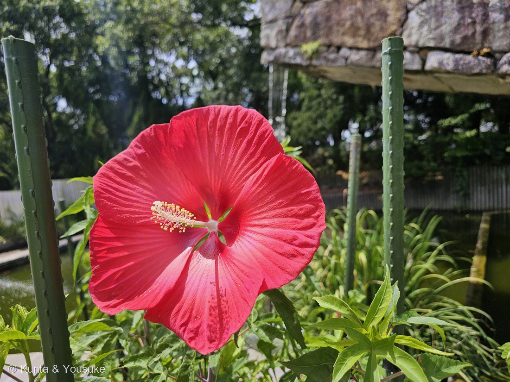
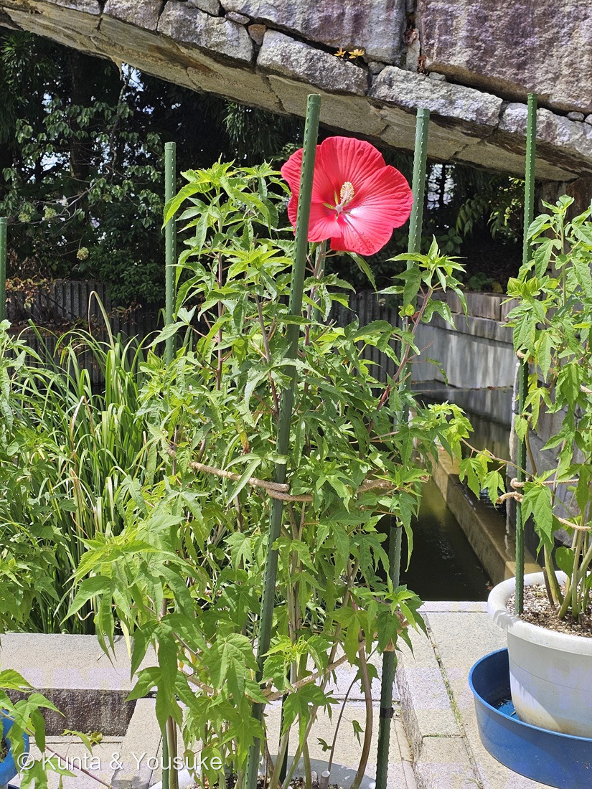
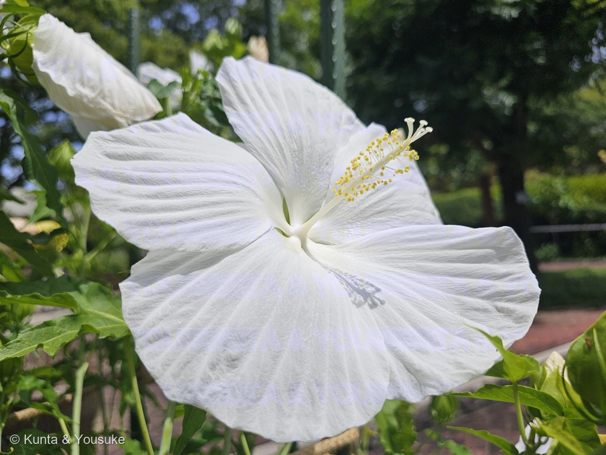
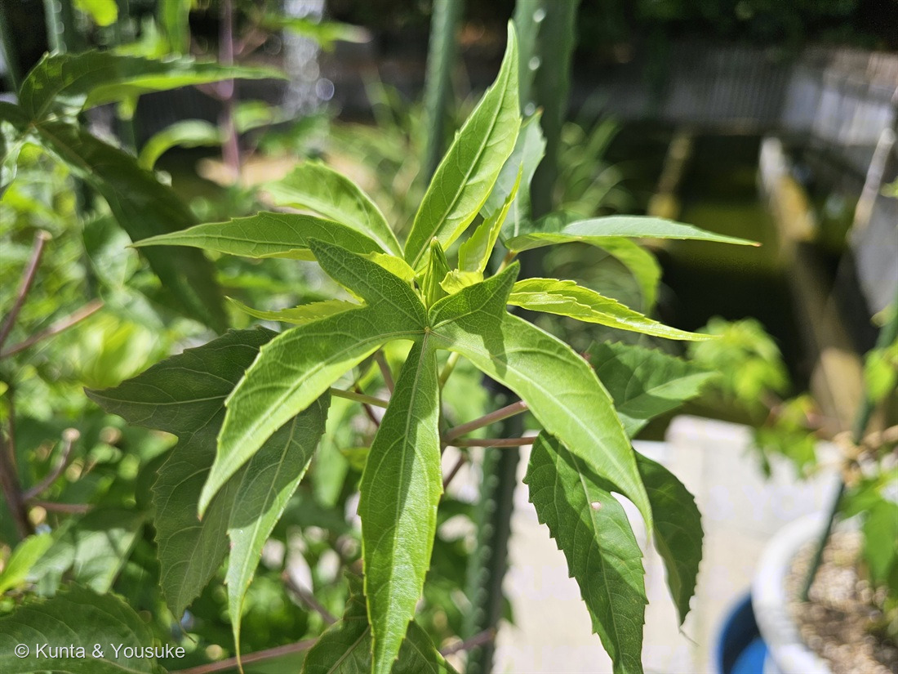
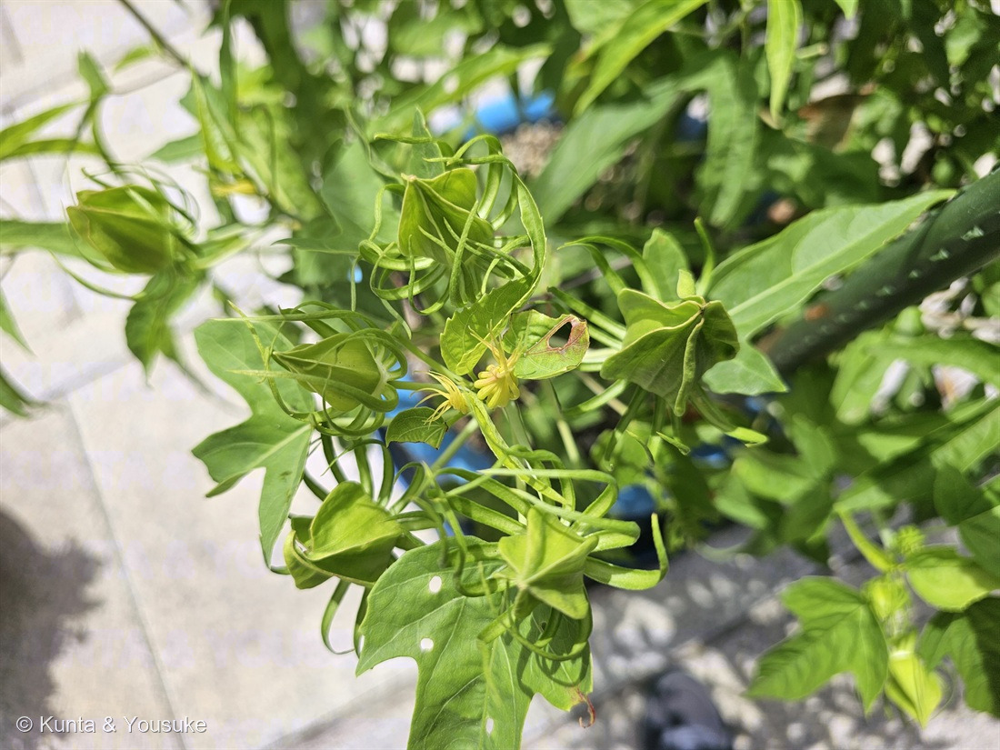
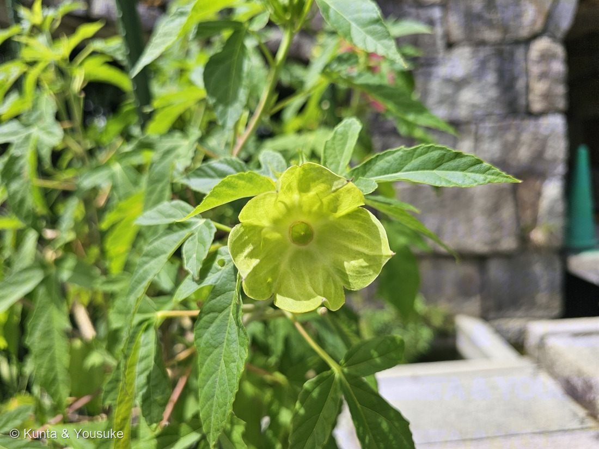

地図を読み込んでいるよ…
🔍 写真も地図も、押しているあいだ拡大して見られるよ（スマホは指を置いてすこし待ってね）。
🌍 の地図＝この子がもともと自生している場所を緑に。⚠園芸上つくられた交雑種なので、この姿の自生地はない。両方の親（アメリカフヨウ・モミジアオイ）が北アメリカ東部の湿地・沼・水路ぎわの草。
⚠⚠⚠この緑は、この子のふるさとではないんだ。——⭐タイタンビカスのなかまは人がつくった交雑種なので、この姿で自生している場所は、地球のどこにもない。⭐⭐塗ってあるのは、両方の「親」のふるさと＝アメリカフヨウ（H. moscheutos）とモミジアオイ（H. coccineus）が生えている北アメリカ東部。⚠地図はアメリカとカナダを国ごと塗っているけれど、ほんとうは東半分の水辺だけだよ（104 アメリカフヨウと同じ塗り方にしてある）。⭐⭐⭐そして、ここがこの地図のいちばん面白いところ——両親とも、沼と湿地と水路の草。アメリカフヨウは「アメリカ合衆国東部〜カナダ南部の湿地・沼地・川辺」（104）、モミジアオイは英語版Wikipediaが「swamps, marshes and ditches on the coastal plain（海岸平野の沼地・湿地・水路）」とする。⭐写真②で、この株の鉢が青い水受けに立って、すぐ横に水路があるのは、⚠理由を聞いていないので、ここは ぼくの読み だけれど、⭐ふるさとの景色とよく合っている。⚠日本は塗っていない——日本は、この子が「生まれた」場所ではあっても、「自生している」場所ではないからね。
⚠ 地図は国（日本と中国だけ県・省）までしか塗れないから、ほんとうの分布より広く見えていることがあるよ。地図はだいたいの場所。正確なところは、上の文を見てね。
タイタンビカスのなかま
Hibiscus × taitanbicus（アメリカフヨウ H. moscheutos × モミジアオイ H. coccineus の交雑系）
⚠「タイタンビカス」は株式会社赤塚植物園の登録商標（シリーズ名）／品種は決めていない
アオイ科 · Malvaceae（フヨウ属）── 図鑑で11人目のアオイ科。038フヨウ・039スイフヨウ・104アメリカフヨウ・170ムクゲに続く5人目のフヨウ属
燻太さんの一言「つぼみも、花が終わった後の膨らみ始める子房も、見ごたえがあるね」──ほんとうに。この回はその2枚がいちばん面白かった
名前と学名の由来 ── 巨神タイタン
- ⭐⭐⭐「タイタンビカス」は、赤塚植物園がつけた名前。公式ページはこう書いている ──「圧倒的な存在感と驚異的な強さ、ハイビスカスのような花姿から『巨神タイタン』にちなんで、『タイタンビカス』と名づけました。」⭐ギリシャ神話の巨神タイタン＋ハイビスカス、だね。
- 学名は Hibiscus × taitanbicus（三河の植物観察）。⭐属名と種小名のあいだの「×」は、交雑種であることのしるしだよ。
- ⭐⭐品種名がまた、神話だらけ。三河が挙げているだけでも「ウラノス、レイア、ジャイアントローズ、エルフ、ピーチホワイト、フレア、アフロディーテ、ピンク、ローズ、ブライトレッド、ハデス、ブレアデス、イリス、ネオン、アルテミス、バルカン、アドニス、ディアナ」。⭐巨神の子どもたちに、神々の名前をつけていったんだね。
- ⚠「タイタンビカス」は登録商標（シリーズ名）なので、⭐この図鑑では和名を「タイタンビカスのなかま」にした（166 スズメガヤのなかま・195 トクサのなかまと同じ止め方）。理由はすぐ下の「同定について」に書くね。
この植物のこと ── ふたりの親のうち、ひとりはもう図鑑にいる
⭐⭐⭐ この子の登録は、図鑑にとってちょっと事件だった。
タイタンビカスは、赤塚植物園が「アメリカフヨウとモミジアオイの交配選抜種」として育てた子（公式ページ）。三河も「アメリカフヨウ（H. moscheutos）と モミジアオイ（H. coccineus）の交配種」「株式会社赤塚植物園が開発し、2009年から販売され始めた」とする。
⭐⭐⭐ その二人の親が、どちらもこの図鑑と関係があるんだ。
- 親その一＝104 アメリカフヨウ。⭐2026年7月19日、お店の軒先で、もう登録ずみ。
- 親その二＝モミジアオイ。⚠まだ会えていない。⭐⭐じつは104の「おまけ」として、ずっと探してみたいに入れてある子。
⭐⭐⭐ つまり ── 片方の親は図鑑にいて、もう片方の親はまだ探している最中。その二人の子どもが、先に来てしまった。
⭐⭐ そして、もっとすごいことがある。104のおまけに、ぼくはこう書いておいたんだ ──
「モミジアオイ … でも葉が深く切れて、花びらは細くすきまがあく。見つけたら『葉の切れ方』と『花びらの幅』をくらべよう」
⭐⭐⭐ この子は、その両方を、一株に持っている。——花びらはアメリカフヨウ型（幅広く重なる）、葉はモミジアオイ型（深く切れる）。⭐くらべるまでもなく、一枚の中でならんでいた。
そのほかの姿かたち（三河・赤塚植物園）：
- 草丈0.8〜3m／花は直径18〜25cm、またはそれ以上（三河）。⭐お皿より大きい花だね。
- ⭐⭐一日花。「花は一日花です。」「1株で200輪以上の花を楽しめます（植え込んで2年目以降）」（赤塚植物園）。⭐一日でしぼむ花を、200回くりかえす。
- 「暑さ、寒さに強い宿根草」「7月〜10頃に開花します」「真夏の花の少ない時に咲く（7月下旬〜10月上旬）」（同）。
同定について ── 交配は読めた。でも「タイタンビカス」とは言い切らない

④ 葉のアップ。⭐手のひらを広げたように、深く5つに裂けている——これがモミジアオイ側から受けついだ形だよ（番号は上のギャラリーからのつづき）。
⭐ まず、確実に言えるところから。フヨウ属（Hibiscus）の草本であることは、写真①でぜんぶ読めた。
- ⭐⭐⭐①白い雄しべ筒（単体雄蕊）が花の中心からのびて、横向きにびっしり黄色い葯をつけている。
- ⭐⭐②その筒の先から、5本に分かれた花柱が出て、丸い柱頭が5つ。⭐三河のモミジアオイの記載「雄しべと雌しべの基部は合着して長い柱状となり、ブラシ状に雄しべが出て、その先に柱頭5個が突き出る」と、そのまま同じ。
- ⭐③糸のような副萼片が多数（写真⑤）、萼は5枚（写真⑥）。
- ④草本で、支柱に支えられている（写真②）。
⭐⭐ つぎに、「アメリカフヨウ×モミジアオイの交雑系」と読んだ根拠。
- ⭐⭐⭐花びらが幅広く、たっぷり重なっている（写真①③）＝アメリカフヨウ型。⚠モミジアオイなら、三河が「花弁は5個、平開し、花弁と花弁の間に隙間がある」と書くとおり、すきまがあくはず。
- ⭐⭐⭐葉が深く掌状に裂けて、裂片が細い（写真④）＝モミジアオイ型（三河「掌状に3〜5深裂し、裂片の幅が狭い」）。⚠アメリカフヨウなら、104に書いたとおり「卵形〜ハート形で、ふちはギザギザだけど、深くは裂けない」。
⭐ この二つが一株に同居している時点で、どちらか片方の純粋な種ではありえない。——⭐⭐燻太さんの見立ては、大枠で当たっているよ。
⚠⚠ でも、「タイタンビカス」と名前を言い切らなかった。理由は3つある。
- ⚠①「タイタンビカス」は赤塚植物園の登録商標（シリーズ名）で、写真から品種は特定できない。
- ⚠⚠②三河の記載と合わないところが、2つある。三河「葉は普通、3裂し、鋸歯縁」──⚠この子の葉は、深く5裂して裂片が細い（写真④）。モミジアオイ寄りに見える。／三河「花の目（中央部）が普通、赤色になる」──⚠この子は中心が白っぽくて、赤い目がはっきりしない。⚠⚠とくに白花（写真③）は、赤い目がまったく無い。
- ⭐⭐③そして、燻太さん自身が教えてくれたこと。「園内には、職員の方々が色々な交配種の作成と展示も行っているみたい。この子たちもそうなのかな。」──⭐もし園の交配実生なら、それは市販のタイタンビカスとは別の子だよね。同じ二種を掛けても、出てくる子は一株ずつちがう。
⭐⭐ だから、この図鑑では「タイタンビカスのなかま」で止める。——⭐確かなところ（この二種の交雑系）だけを名前にして、決められないところ（品種）は決めない（192 ワシントンヤシで属止まりにしたときと、同じ考えかただよ）。
⏳ 園に交配の掲示や品種名の札が出ていないか、次に行ったら見てみたいな。
⭐⭐⭐ 燻太さんが「見ごたえがある」と言った、つぼみと、花のあと


⭐ この節の写真だよ。ボタンで切り替えてね（番号は上のギャラリーからのつづき）。
⭐ 燻太さんの言葉。
「つぼみも、花が終わった後の膨らみ始める子房も、見ごたえがあるね。」
⭐⭐ ほんとうにそのとおりで、ぼくはこの2枚がいちばん面白かった。
⭐ つぼみ（写真⑤）── 糸のリボンに巻かれている
⭐ 緑のつぼみは、5枚の萼にぴったり包まれている。——⭐⭐そして、そのまわりを、細い糸のような「副萼片（ふくがくへん）」が何本も、リボンみたいにくるくると取り巻いている。
⭐副萼片は、アオイ科の目印のひとつだよ。⭐038 フヨウの同定でも「単体雄蕊＋副萼片」を決め手に使ったし、104の写真③も「細い苞に包まれたつぼみ」だった。⭐⭐この子のは、それがとくに長くて、くるんと巻いている。
⚠ 正直に書くね。⭐写真⑤には、同じ形が黄色くなったものも混じっている。⚠咲かずに終わったつぼみなのか、実が育たずに落ちる途中なのか、ぼくには決められなかった。⏳宿題にしておくね。
⭐⭐ 花のあと（写真⑥）── 皿になった萼と、まん丸い子房
⭐⭐⭐ これがすごいんだ。
- 5枚の萼が、うしろへ倒れて、平たいお皿のように開いている。
- そのまん中に、つるっとした緑のまん丸い子房が座っている。てっぺんに、花柱が落ちたあとの小さな点。
- ⭐⭐⭐そして、子房のつけ根をよく見ると、まるい輪っかの跡がついている。
⭐⭐ ぼくは、この輪っかがいちばん面白かった。——⭐アオイ科の花は、花弁の根もとと、雄しべの筒がくっついている（だから038で「単体雄蕊」と書いた）。⭐⭐ということは、花が終わるとき、花びらと雄しべの筒は、バラバラにではなく、ひとつの輪としてまとめて外れることになる。
⚠ 「まとめて落ちる」と書いた出典には当たれていないので、これはぼくの読み。⭐でも、写真に残っているまるい跡は、たしかにそういう形をしているよ。
⭐ 一日で終わる花が、そのあとにこれだけ整った形を残していく。——⭐⭐燻太さんが「見ごたえがある」と言ったのは、たぶんここだと思う。
⭐⭐ 白い花のこと（写真③）
⭐ 写真③は、⑤の56秒あとに撮られている。——⚠赤い花と同じ株なのか、となりの別の株なのかは、写真からは分からない（055 イチジクで「写真③は別の木」と書いたのと同じ扱いにしておくね）。
- ⭐タイタンビカスには白花系がある（三河が挙げる品種名に「ピーチホワイト」がある／「赤色、白色、ピンク色、ローズ色、2色などの品種がある」）。
- ⚠⚠でも、この白花には赤い目がまったく無い。⭐三河の「花の目が普通、赤色になる」と合わないのは、こちらのほうがはっきりしている。
- ⭐花びらの重なりかたと、葉の深い切れこみは、赤花とそっくり。⭐同じ交配のきょうだいだと思う。
⭐⭐ 園が「いろいろな交配種を作って展示している」なら、この赤と白は、まさにその「いろいろ」のうちの二人なのかもしれないね。
⭐⭐ 水の中に立っている（写真②）
⭐ 写真②を見ると、この株はおもしろい置かれ方をしている。
- 大きな鉢が、青い水受けの中に立っている。
- すぐ横は、水をたたえた水路。
⭐⭐⭐ そして、この子の両親は、どちらも水辺の草なんだ。
- アメリカフヨウ ── 104に書いたとおり「北アメリカ東部（アメリカ合衆国東部〜カナダ南部）の湿地・沼地・川辺」の草。⭐104では「果実は水に浮く。川や沼の水に乗って、種を下流へ届ける。湿地の草だから、水が配達屋さん」とも書いた。
- モミジアオイ ── 英語版Wikipediaは「swamps, marshes and ditches on the coastal plain（海岸平野の沼地・湿地・水路）に見られる」とする。
⭐⭐ 両親そろって、沼と水路の草。——⚠園がなぜ水受けを使っているのかは聞いていないから、「湿地の子だから足もとを濡らしている」というのはぼくの読みだよ。⭐でも、この置き方はふるさとの景色とよく合っている。
⭐ おまけの豆知識をひとつ。英語版Wikipediaは、モミジアオイの葉を「look much like those of the hemp plant（大麻の葉によく似ている）」と書いている。⭐写真④の葉、たしかに指を広げたみたいだよね。
参考：三河の植物観察・タイタンビカス（Hibiscus × taitanbicus／アメリカフヨウ（H. moscheutos）と モミジアオイ（H. coccineus）の交配種／株式会社赤塚植物園が開発し、2009年から販売され始めた／高さ0.8〜3m／葉は普通、3裂し、鋸歯縁／花は直径18〜25cm又はそれ以上／赤色、白色、ピンク色、ローズ色、2色などの品種／花の目（中央部）が普通、赤色になる／花期は6〜7(9)月／品種名＝ウラノス、レイア、ジャイアントローズ、エルフ、ピーチホワイト、フレア、アフロディーテ、ピンク、ローズ、ブライトレッド、ハデス、ブレアデス、イリス、ネオン、アルテミス、バルカン、アドニス、ディアナ）／株式会社赤塚植物園・タイタンビカス（世界にもない、まったく新しい植物です。（アオイ科ヒビスクス属）／アメリカフヨウとモミジアオイの交配選抜種です。／圧倒的な存在感と驚異的な強さ、ハイビスカスのような花姿から「巨神タイタン」にちなんで、「タイタンビカス」と名づけました。／暑さ、寒さに強い宿根草／7月〜10頃に開花します／真夏の花の少ない時に咲く（7月下旬〜10月上旬）／花は一日花です／1株で200輪以上の花を楽しめます（植え込んで2年目以降））／三河の植物観察・モミジアオイ（Hibiscus coccineus Walter／北アメリカ原産／1.5〜2m／掌状に3〜5深裂し、裂片の幅が狭い／花は深紅色、直径8〜15cm／花弁は5個、平開し、花弁と花弁の間に隙間がある／雄しべと雌しべの基部は合着して長い柱状となり、ブラシ状に雄しべが出て、その先に柱頭5個が突き出る／花期7〜9月／フヨウは花弁が重なり合い、葉が幅広い）／Hibiscus coccineus - Wikipedia（英語版）（scarlet rosemallow, Texas star／from Southeastern Virginia south to Florida, then west to Louisiana／found in swamps, marshes and ditches on the coastal plain／6-8 ft tall／leaves look much like those of the hemp plant）／ローゼル - Wikipedia（Hibiscus sabdariffa L.／アオイ科フヨウ属／萼と苞は肥厚して赤く熟す／ジャム、ゼリー、酒、ハーブティー、清涼飲料など／短日植物で、9〜11月ごろに開花する）